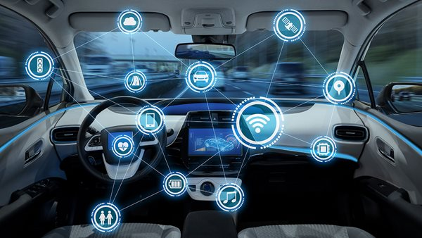

Piloto automático y modo de conducción autonóma
Tesla dispone de un software que permite el modo de piloto automático y el modo de conducción autónoma en sus coches. El Sistema Avanzado de
Asistencia al Conductor (ADAS) ayuda a los conductores a reducir sus tareas manuales. Ayuda a mejorar tanto la seguridad como la comodidad.
Esta función especial de IoT ayuda al conductor a tomar el control del coche en accidentes y situaciones no ideales.
Si hablamos de los últimos modelos de Tesla, el actual viene con 8 cámaras para vistas externas, sensores ultrasónicos,
ordenadores de a bordo, etc. Esto ayuda al conductor a enfrentarse a todo tipo de situaciones.
Gracias a los sensores compatibles con IoT, la seguridad de Tesla es mucho mayor que la de los coches convencionales.
Actualiza automáticamente los parches de seguridad, avisa al conductor sobre los riesgos y las posibles causas de accidentes, etc.
- Freno de emergencia automático: detecta coches u obstáculos con los que pueda impactar el vehículo y aplica los frenos en consecuencia
- Advertencia de colisión frontal: advierte de colisiones inminentes con vehículos parados o que se desplazan lentamente
- Advertencia de colisión lateral: advierte de posibles colisiones con obstáculos situados a lo largo del vehículo
- Aceleración evita-obstáculos: reduce la aceleración cuando se detecta un obstáculo delante de su vehículo mientras conduce a velocidad baja
- Monitorización de puntos ciegos: advierte cuando se detecta un vehículo u obstáculo al cambiar de carril
- Prevención de salida de carril: aplica una dirección correctiva para mantener el coche en el carril previsto
- Prevención de salida de carril de emergencia: guía el coche al carril de conducción cuando detecta que se está saliendo de su carril y que podría producirse una colisión
| Comparativa |
Tesla |
Coche convencional |
| Ad. colision frontal |
SI |
No todos |
| Freno asisitido |
SI |
NO |
| Ad. colision lateral |
SI |
NO |
| Evita-obstaculos |
SI |
NO |
| Monitorización puntos ciegos |
SI |
NO |
| Prevención saldida |
SI |
NO |
| Prevencion salida emergencia |
SI |
NO |
Todas estas prestaciones hacen de este un sistema seguro. Gracias al IoT, la regocida de datos nunca va a ser unica, ya que dia a dia recopila mayor cantidad de datos,
para realizar un analisis y mejorar las prestaciones actuales para ofrecerselas al consumidor
